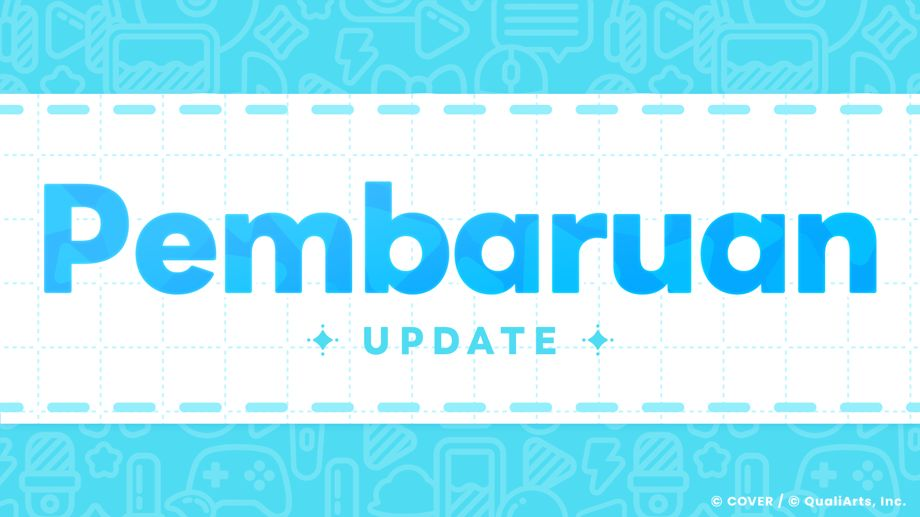
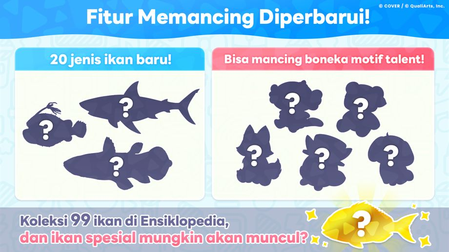
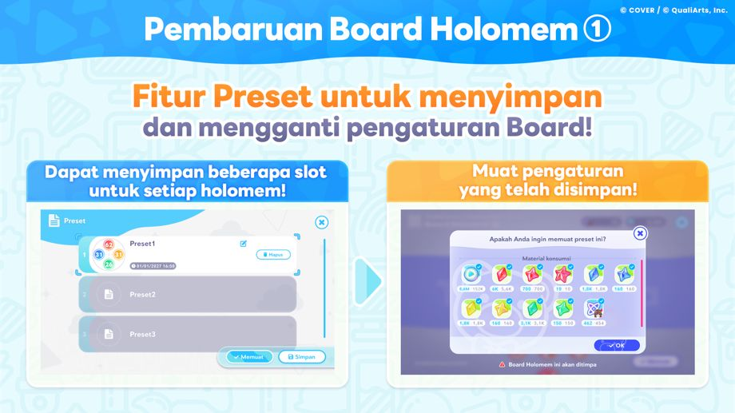
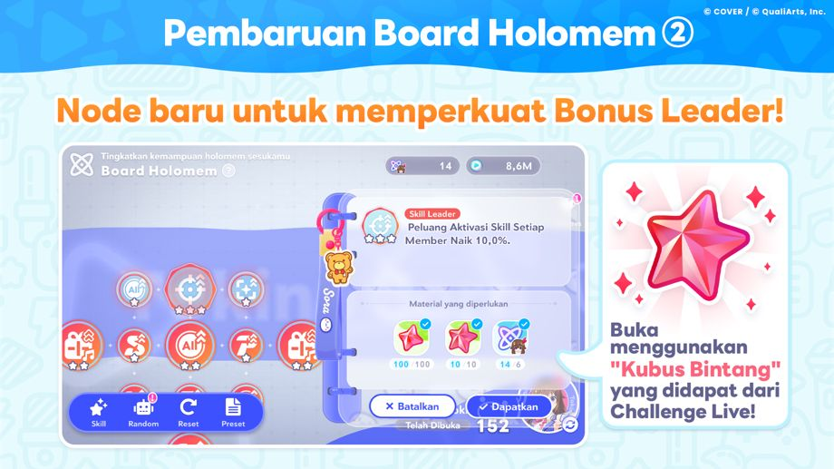

Terima kasih sudah menggunakan layanan ini.
Ini adalah tim operasional "hololive Dreams."
Pada 2026-11-25 11:00:00 telah dilakukan pembaruan versi 1.3.0.
Mini-game Baru "Puka Puka Fight" Hadir.

Mulai dari 2026-11-25 11:00:00 Mini-game baru "Puka Puka Fight" Hadir!
"Puka Puka Fight" adalah permainan strategi untuk saling menjatuhkan lawan ke air dari atas platform.
Gerakkan holomem di timmu dan manfaatkan holomem Lawan yang menjadi teman secara efektif dalam permainan.
Bermain di Solo Play melawan berbagai holomem, atau melawan pemain lain di Multiplayer.
Konten Baru "Challenge Live" Hadir.

Mulai dari 2026-11-25 11:00:00: Konten baru "Challenge Live" Hadir!
"Challenge Live" adalah mode permainan baru di Live untuk mencapai target skor yang ditentukan di setiap stage.
Hadiah Penyelesaian Stage mencakup "Kubus Bintang", material baru untuk node di Board Holomem.
Gunakan Member Bonus yang ditentukan di setiap stage untuk maju hingga ke lantai tertinggi "Stage 100".
Pembaruan Lainnya
◆Pembaruan Memancing

- 20 jenis ikan baru telah hadir, dan hadiah pencapaian untuk Ensiklopedia Ikan juga telah dibuka.
-
Umpan pancing "Jeruk", "Gummy", dan "Umpan Pasta Bintang" kini bisa didapatkan di Bae's Bits & Bobs.
"Jeruk" dan "Gummy" akan terbuka setelah menyelesaikan Misi Utama Soda Pop Lagoon, sedangkan "Umpan Pasta Bintang" terbuka setelah menangkap 99 jenis ikan.
◆Pembaruan Board Holomem

-
[Fitur Preset Board Holomem Untuk Setiap holomem]
Fitur preset telah ditambahkan untuk menyimpan beberapa status Board Holomem untuk setiap holomem, serta memuat kembali status yang telah disimpan tersebut.

-
"Penambahkan node yang memerlukan item baru"
Menambahkan node yang memperkuat Skill Leader pada Board Holomem.
Untuk membuka node yang telah ditambahkan, diperlukan "Kubus Bintang" yang bisa diperoleh dari Challenge Live.
◆Peningkatan & Pembaruan Live
- Bisa bermain Live tanpa menggunakan Boost meskipun Live Boost penuh.
- Dialog konfirmasi akan muncul ketika memulihkan Live Boost dalam jumlah besar.
- Pada layar pemulihan Live Boost, saat menekan "<<" atau ">>", jumlah pemulihan ditingkatkan agar berhenti secara bertahap pada angka 0, 10, 20, dan 99.
- Transisi antara layar pemilihan lagu dan layar Peringkat Skor telah ditingkatkan.
◆ Pembaruan Lainnya
-
"Fitur untuk melakukan Mekar pada beberapa Member sekaligus"
Kini bisa melakukan Mekar sekaligus pada Member yang bisa Mekar menggunakan "Pt Mekar Khusus". -
[Penambahan Kotak Centang "Gunakan Bloom Stone" pada "Layar Pemilihan Member Mekar"]
Jika dicentang, Member yang dapat di-Mekar-kan menggunakan "Bloom Stone" juga akan ditampilkan. -
[Penambahan Kotak Centang "Gunakan Bloom Stone" pada Layar Mekar]
Jika dicentang, Mekar akan dilakukan menggunakan "Bloom Stone" juga.
*Jika tidak memiliki Bloom Stone, kotak centang tidak akan ditampilkan.
*"Mekar Pt" akan digunakan terlebih dahulu. -
"Koin Mega Sphere kini bisa didapatkan dari Holowork"
Koin Mega Sphere bisa diperoleh dari "Rekaman" dan "Stream Ngobrol" di Holowork. -
"Menampilkan dialog konfirmasi saat menggunakan Bloom Stone"
Dialog konfirmasi akan ditampilkan saat menggunakan Bloom Stone. -
"Fitur untuk menampilkan Parameter dasar Member pada layar detail Member"
Kini bisa menampilkan Parameter dasar saja tanpa menyertakan efek bonus seperti Board Holomem. -
"Fitur untuk pindah ke dekat holomem pada Misi Holomem"
Kini bisa berpindah ke dekat holomem target melalui ikon holomem pada layar Misi Holomem. -
"Fitur pengaturan jangkauan privasi Profil untuk setiap bagian"
Kini bisa mengatur setiap bagian dengan pilihan "Publik", "Privat", atau "Khusus Teman".
◆Penyesuaian Lainnya & Perbaikan Bug
-
Penyesuaian hadiah yang dapat diterima di holo Home.
Penyesuaian isi hadiah menjadi "Holomedal" di hari apa pun. -
Warna item Latihan kini dapat dikonversi di "Ichijou VIP Lounge" yang ada di Soda Pop Lagoon.
Gunakan Koin Soda Pop untuk menukar Manik dan Kristal dengan item berwarna lain.
*Akan terbuka setelah menyelesaikan Main Quest Chapter 3 "Soda Pop Lagoon". - Penyesuaian sebagian lokasi Peti Harta di Harmony Garden.
-
Beberapa ikon pada Board Holomem telah disesuaikan.
Target: "Peluang Aktivasi Skill Aktif Naik", "Efek Support Skor". - Penyesuaian pada ekspresi wajah, warna, dan detail lainnya untuk Outfit Live beberapa holomem.
- Penyesuaian dilakukan agar pemain dapat memungut item jatuh di Taman dengan lebih lancar.
- Perbaikan minor pada berbagai Mini-game.
- Perbaikan minor lainnya.